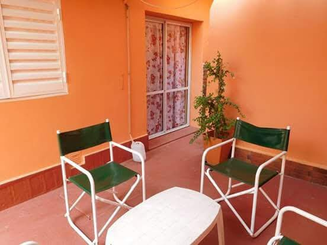
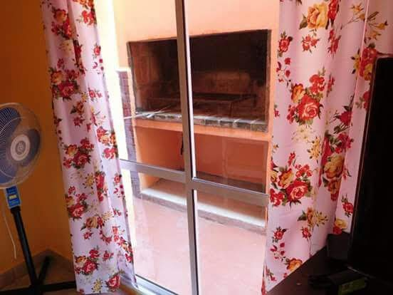

ALQUILERES TEMPORARIOS PALOMEQUE
BIENVENIDOS
INICIO
QUIENES SOMOS
DEPARTAMENTO 1
DEPARTAMENTO 2
DEPARTAMENTO 3
CONTACTO
 
Tenemos una ubicacion increible!!
Estamos proximos al famoso reloj cucu, y a 5 cuadras de la peatonal principal. Hay supermercados, almacenes, paradas de colectivos, centros comerciales,etc.a tan solo una cuadra del complejo.